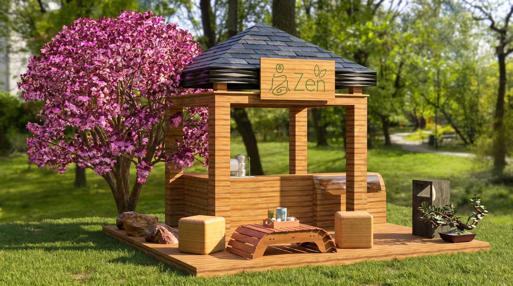

Zen Infusiones Naturales
Serene and minimal packaging design for a natural herbal tea brand that celebrates nature, balance and wellbeing.
Zen Infusiones Naturales required a packaging system that communicated purity, naturalness and calm the moment it was seen. Each blend needed its own visual identity while maintaining family cohesion across the line.

- Client
- Zen
- Service
- Packaging
- Year
- 2023
Packaging that breathes tranquility
Botanical illustration, soft earthy typography and a restrained color coding system allow customers to intuitively navigate the range. The result is packaging that feels as calming to hold as the tea is to drink.
Tools used
- + Adobe Illustrator
- + Photoshop
- + InDesign


Creative process
- 1. Research & Moodboard. Research into natural wellness brands, botanical illustration traditions and retail shelf positioning.
- 2. Illustration & System. Custom botanical illustrations for each blend, color system development and typographic hierarchy.
- 3. Dielines & Print. Technical packaging dielines, print-ready files and supplier specifications for production.



Next project
Curious Cafe Branding